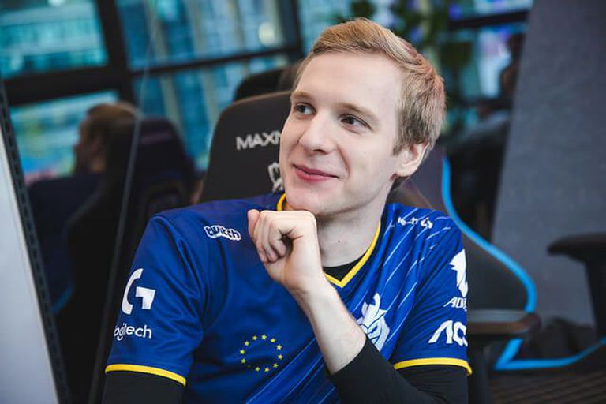
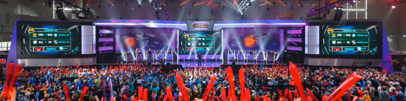

League of Legends jest najpopularniejszą grą jeżeli chodzi o e-sport.
Olbrzymi boom i rozwój w e-sport nastąpił około 2009 roku (powolny spadek nastąpił od 1997 roku z powodu azjatyckiego kryzysu finansowego),
gdzie zaczęto organizować duże, międzynarodowe turnieje gier komputerowych (prawie z każdego gatunku).
Najbardziej na e-sporcie zyskały gry online, głównie z gatunku MOBA.
Z biegiem czasu, powstało wiele konkurujących ze sobą turniejów jak np. World Cyber Games, DreamHack, World e-Sports Games, ESL Extreme Masters czy Poznań Game Arena. Największym do tej pory wydarzeniem e-sportowym były Mistrzostwa Świata Sezonu 2017 w League of Legends, które przyciągnęły około 100 milionów widzów.
W przypadku największej puli pieniężnych nagród została zgromadzona w turnieju The International 2018 w grze komputerowej Dota 2 i wynosiła ponad 25 mln dolarów.
LFC znany też jako League of Legends European Championship (dawniej znany jako EU LCS - League Championship Series) jest elitarną ligą esportową League of Legends w Europie. W jej skład wchodzi 10 zespołów, które mają w danej rundzie do rozegrania 18 gier (dwa razy z każdym). Są dwie rundy rozgrywek - wiosenna i letnia, a dodatkowo po rozegraniu nich, najlepsza szóstka gra w playoffach, które gwarantują punkty do uczestnictwa w Mistrzostwach Świata. Do najważniejszego turnieju awansują trzy ekipy: zwycięzca letniego cyklu, drużyna z największą ilością punktów z obu rund oraz drużyna z regionalnych eliminacji.

European Masters to specjalny turniej rozgrywany dla najlepszych regionalnych drużyn z 13 lig, który jest rozgrywany przez około trzy tygodnie wiosną i latem (najczęściej chwilę po rozegraniu playoffów LEC). Drużyny walczą o tytuł najlepszej drużyny z Europy.
Jednym z najpopularniejszych polskich zawodnikow jest Marcin "Jankos" Jankowski grający w dróżynie G2.
Jankos zajął pierwsze miejsce w liscie najlepszych graczy na Worldsach 2019 wedłóg ESPN.com.
Na tej liście znaleźli się tacy zawodnicy jak: Clid, JackeyLove, Uzi, Doinb i Wunder grający w tej samej drużynie co Jankos.